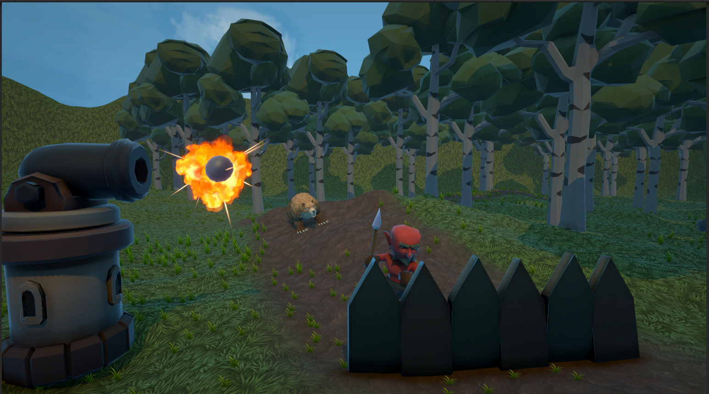
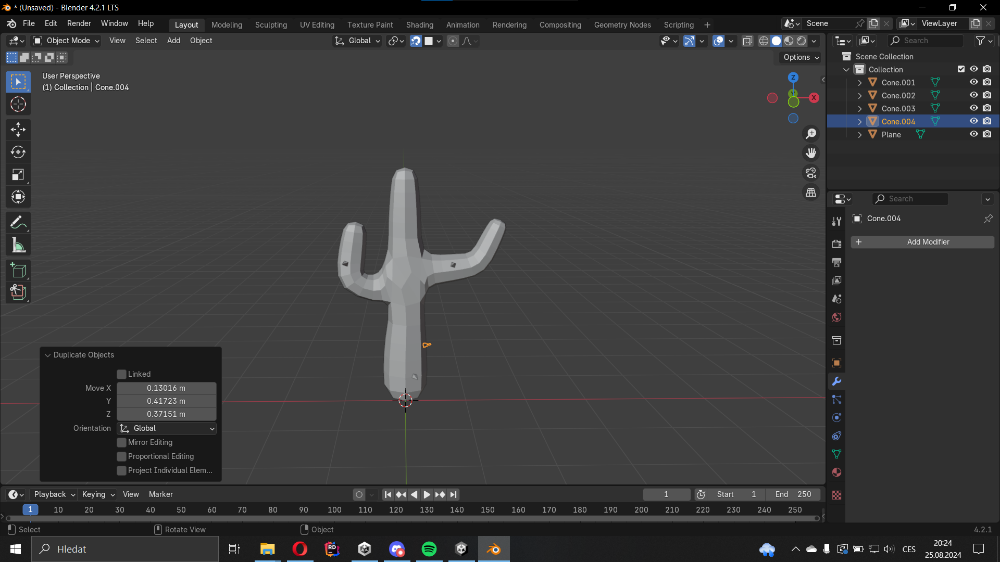
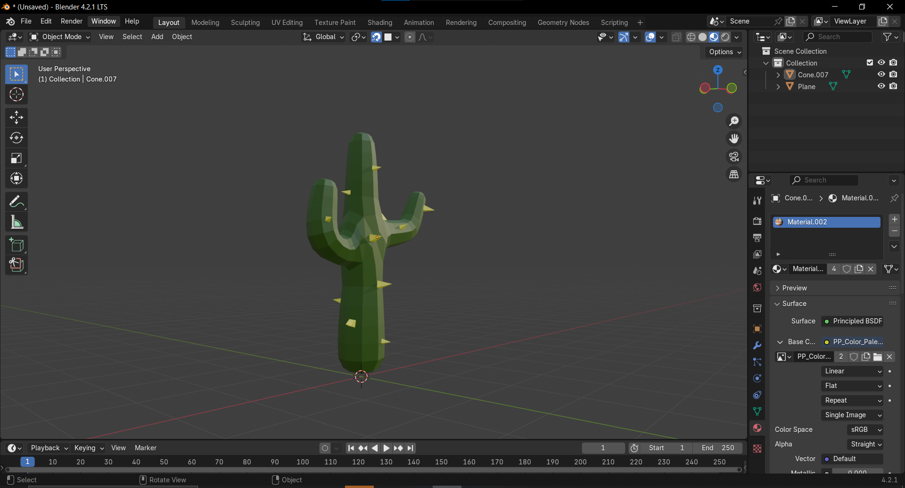
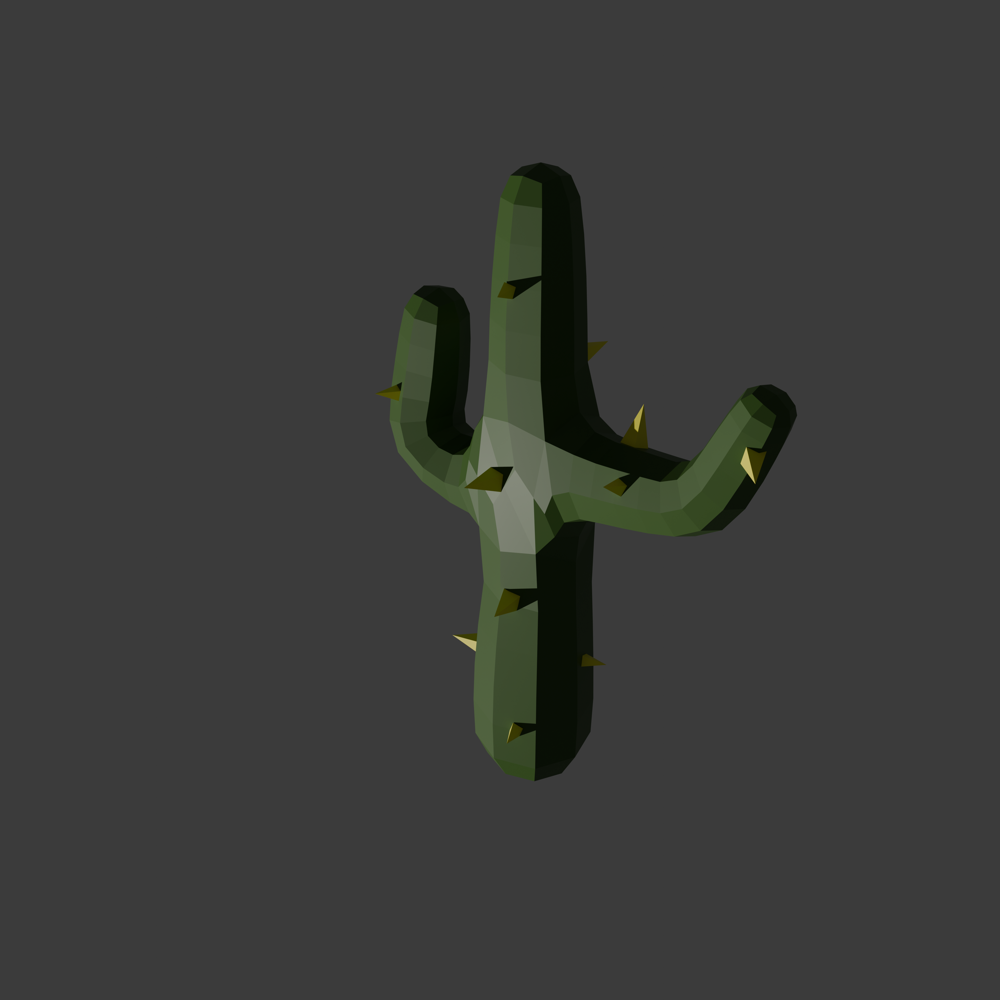

New cactus object and better loading screen
Greetings, Guardians!
I'm thrilled to announce a new prop in Romardia. While working on the "Desert Oasis" map I have added a cactus object. I have also updated the loading screen background image to get rid of the AI generated background
AI be gone
Do you remember the old background of the loading screen?
Yeah, that AI generated b*llshit.
I've listened to your feedback and I wanted to show the world of Romardia in all of its beauty.
That's why I've decided to change the loading screen background to a screenshot captured directly in the game.
Now you can admire the world you're about to explore even during loading times.

New loading screen
Cactus
I've tried my best in Blender to model a new cactus prop.
I've added it to the "Desert Oasis" map alongside the palm trees to make it more lively and to give it a unique feel.
I hope you'll like it as much as I do.

cactus before colors and spikes

cactus after completion

cactus rendered in blender
What's Next?
I'm commited to provide you with the best game experience possible. I am currently working on revamping all the difficulties and implementing them into many more aspects of the game then now
I'll continue to listen to your feedback and make improvements based on your suggestions.
Stay tuned for more updates, thank you for your support.
See you in the desert Guardians!
Ondrej Janousek
Lead Developer of Fortress Guardian